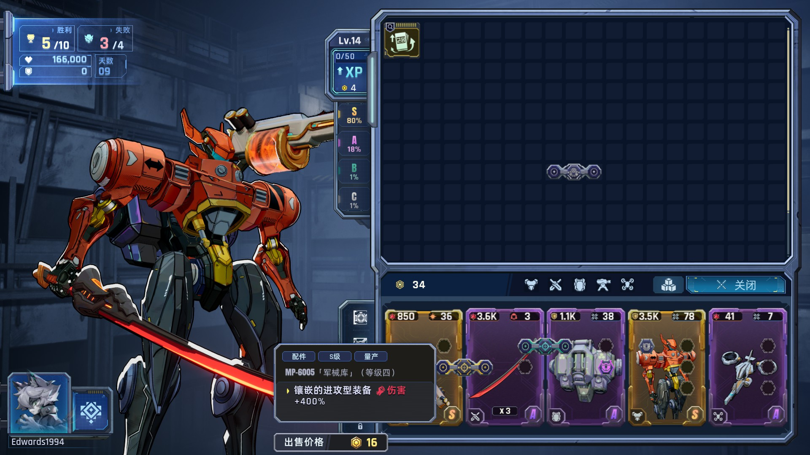
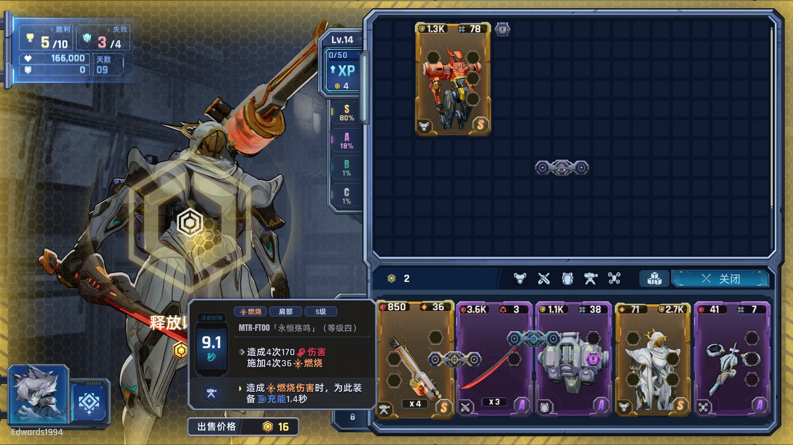
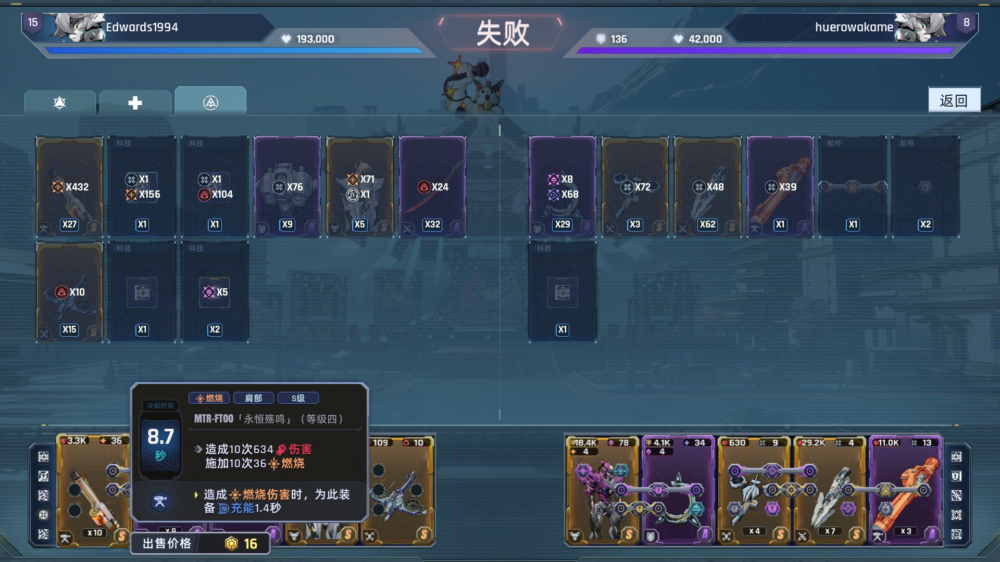
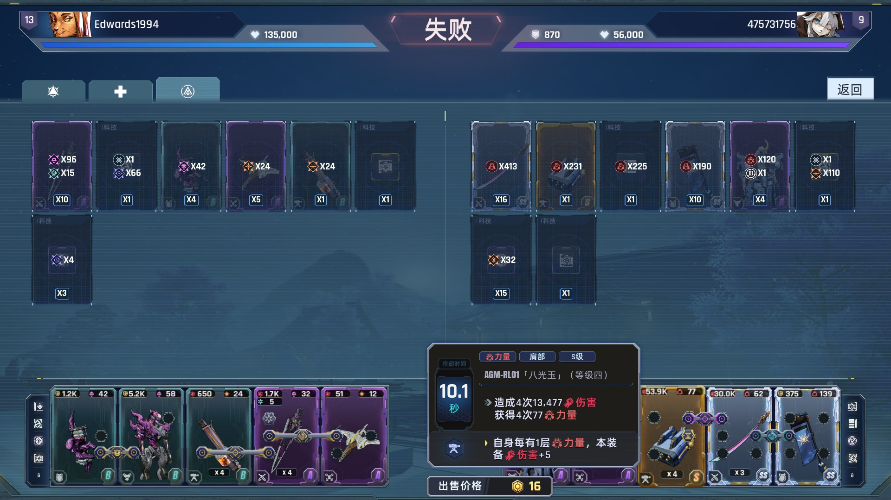
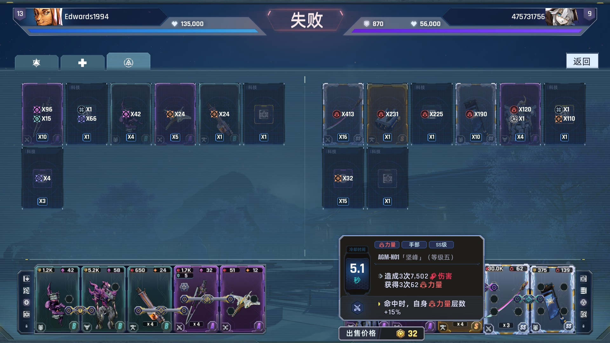

配件生效后，肩武卡面和悬浮说明给出两种每击伤害
BUG-004 · 待确认显示口径。Windows Steam Demo 1.0.0.2218，Build 26644085，2026-11-15。第 9 天黑市里一次，第 10 天战后仍可观察到同类差异。
操作与观察
在黑市给 S 级四段燃烧肩武跨接 MP-6005，词条为进攻型装备伤害 +400%。留在仓库，悬停肩武，比较左上角卡面与说明文字。
第 9 天卡面由 170 变为 850。悬浮说明仍写「造成 4 次 170 伤害」，同屏没有标记这是加成前数值。第 10 天装上攻击段数 +6 后，战后说明会更新为 10 段；该画面还有战斗内成长，不能单独用来测配件倍率。
预期及复测方法
如果说明描述当前伤害，预期每击显示 850。如果设计要求显示基础值，标出基础值与实战值可帮助核对。现有证据确认显示差异，实际命中伤害是否异常仍需复测。
下一次保持同一目标、相同时间点、相同增益，仅卸装一次该配件，记录一次完整齐射，每击伤害与战报都留图。



第四局第8天动态伤害补充
2026-11-16，同版本战后同屏：敌肩卡面53.9k，而说明为4次3477；敌SS刀卡面130.0k，而说明为3次7502。对手存在初始225力量、命中力量+15%、力量转伤肩、伤害+300%和充能等机制。差异可见，但尚未区分基础值、实时加成和额外转伤，不能据此认定伤害结算错误。

